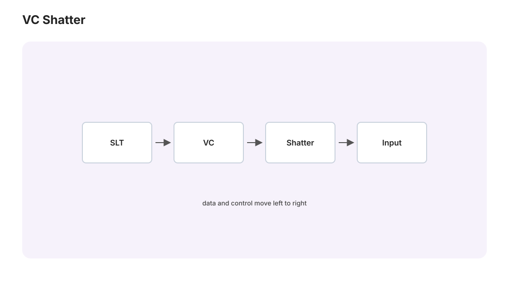

本页目录
统计学习 II · VC 理论与学习论基本定理
对标：SSBD UML §6、Mohri §3 ｜ 前置：slt-01、本科 ai 课 01 讲（VC 维与 Sauer 已证） 无限假设类的 union bound 失效，出路是“数行为而不数函数”。本页把有限点上的组合事实接到双样本对称化、ERM 与可学习性；交互只研究三种明确的二分类类，不把一个 toy 配置冒充全局定理。

学习层：先猜标签能不能实现，再打开行为账本
1. 具体谜题：同样是“画一条边界”，表达力差在哪里？
下面的实验把标签固定为二元的 \(0/1\)，并把点集也固定下来。比较三类假设：
阈值只能在数轴上留下一个“从 0 到 1”的后缀；区间只能留下一个连续的 1 块；平面仿射半空间的边界是一条直线。先问自己：一个有序两点集上，阈值能否实现左 1、右 0？三个有序点上的交替 \(1,0,1\) 呢？正方形四个顶点的 XOR 呢？
2. 先预测：答案在揭示前保持关闭
在下方选择类别、固定点集和目标标签串，再选择“可实现”或“不可实现”。目标标签按点的显示顺序读，例如 1010 表示第 1、3 个点为 1。点击“揭示账本”之前，实验不会显示正确性、已实现标签集合或增长计数；可以随时重置，换一组预测。
无 JavaScript 时的静态读法：标签是二分类 \(0\)–\(1\)，下面的计数是这个固定点集上的 \(|\mathcal H|_S|\)，不是已经对所有点集取最大值的增长函数 \(\Pi_{\mathcal H}(m)\)。
| 类别 | 固定点集 | 目标/缺失标签 | 已实现标签数 | 结论读法 |
|---|---|---|---|---|
| 1D 阈值 | 单点 0 |
0, 1 都实现 |
2 | 一个点被打散，故 \(\mathrm{VC}\ge1\) |
| 1D 阈值 | 有序两点 0<1 |
缺 10；实现 00,01,11 |
3 | 这个两点集未被打散 |
| 1D 区间 | 两点 0<1 |
00,01,10,11 全实现 |
4 | 一个两点集被打散，故 \(\mathrm{VC}\ge2\) |
| 1D 区间 | 三点 0<1<2 |
缺交替 101；其余 7 个实现 |
7 | 这个三点集未被打散 |
| \(\mathbb R^2\) 仿射半空间 | 非共线三角形 | 8 个三位串全实现 | 8 | 一个三点集被打散，故 \(\mathrm{VC}\ge3\) |
| \(\mathbb R^2\) 仿射半空间 | 凸四边形正方形 | 缺 XOR 1010,0101；其余 14 个实现 |
14 | 这个四点集未被打散 |
若脚本不可用，仍可按表检查：阈值的 1 必须是有序后缀，区间的 1 必须连续；平面中 XOR 的同类对角线凸包相交，不能由一条仿射直线严格分开。
3. 最小模型：固定点账本与 VC 量词
对点集 \(S=\{x_1,\ldots,x_m\}\)，记
“\(S\) 被打散”意味着 \(|\mathcal H|_S|=2^m\)。量词不能省略：存在一个大小为 \(m\) 的被打散点集，只给出 \(\mathrm{VC}(\mathcal H)\ge m\)；要证明 \(\mathrm{VC}(\mathcal H)<m\)，必须证明对每一个大小为 \(m\) 的点集，都有至少一个标签串缺失。所以下方的正方形 XOR 是一个清楚的失败见证，却单独不能证明所有四点集都失败。
这六个固定配置正好给出熟悉的下界样本：阈值的一点、区间的两点、平面半空间的非共线三点。相应的上界还需要全称论证：任意两个有序点对阈值都漏掉一个方向；任意三个有序点的区间都不能实现交替；对平面中的任意四点，Radon 定理给出一个两组凸包相交的划分，把两组标成相反类别就不可能被仿射直线严格分开。凸四边形的 XOR 只是这个全称论证最容易看见的特例。
4. 动手验证：从局部结果回到全局定义
揭示后先看三件事：目标串是否在 \(\mathcal H|_S\) 中、固定配置的行为数 \(|\mathcal H|_S|\)，以及它与 \(2^m\) 的比较。只有行为数等于 \(2^m\)，这一个配置才提供“打散”的下界证据；行为数小于 \(2^m\) 只说明当前配置没有被打散，不能把它误读为全类的 VC 上界。
5. 误区与边界：标签账本不是学习保证
- 一个失败配置不是上界证明。 要把“半空间 VC 维是 3”中的“至多 3”写成定理，必须覆盖所有四点配置；一个正方形只负责让 XOR 失败变得可见。
- 固定配置的行为数不是增长函数本身。 \(|\mathcal H|_S|\) 依赖 \(S\)；\(\Pi_{\mathcal H}(m)\) 还要对所有大小为 \(m\) 的 \(S\) 取最大值。
- 可分离不等于统计学无误差。 这里仅检查几何可实现性；样本来自分布后，还要分别声明标签噪声、风险、损失和学习算法。
- 边界约定需要固定。 本页用 \(\mathbf1\{\cdot\ge0\}\)，有限点上的可分离标签可等价地改写成有正间隔的严格分离；不把“穿过点”的画法当成任意数据的保证。
6. 迁移问题
若把阈值换成“两段区间的并”，有序标签串允许出现几次 \(0\to1\) 的切换？你能否先给出一个固定点集的下界，再用“对任意点集”的论证给出上界？再问同一类别在真实数据上出现标签噪声时，为什么“存在一个无误分类器”这句话必须从 realizable 假设中拿掉？
1. 快速复置：从行为数到增长函数
对二分类假设类，增长函数不是“有多少个函数”，而是所有 \(m\) 点限制上最多能出现多少个 \(0/1\) 串：
Sauer 引理（\(d=\operatorname{VC}(\mathcal H)<\infty\)，且 \(m\ge d\)）给出
交互中的三个类在其自然域上分别有 \(\operatorname{VC}(\mathcal H_{\mathrm{thr}})=1\)、\(\operatorname{VC}(\mathcal H_{\mathrm{int}})=2\)，以及 \(\operatorname{VC}(\mathcal H_{\mathrm{hs}})=3\)。这些等式都包含两部分：一个具体点集的下界，以及覆盖所有下一规模点集的上界。
2. 对称化：把总体风险换成双样本差
现在回到统计学习。样本是 \(Z_i=(X_i,Y_i)\stackrel{\mathrm{iid}}\sim\mathcal D\)，标签为 \(Y_i\in\{0,1\}\)，损失是二分类 0-1 损失
定理（一个常用的 VC 一致收敛上界） 在通常可测性条件下，以概率至少 \(1-\delta\)，当 \(m\ge d\) 时
这是用增长函数和 union bound 得到的方便形式；\(C\) 是与版本有关的普适常数。它的核心不是把无限个 \(h\) 逐个相加，而是先把它们在有限样本上的行为合并。
【证明骨架：三个量词要对齐】
① 幽灵样本（ghost sample）：引入独立副本 \(S'\sim\mathcal D^m\)。对有界的 0-1 损失，先用独立副本的集中性把总体均值换成第二个经验均值；一个常见的常数版本是，在 \(m\varepsilon^2\) 足够大时
这里用的是 ghost-sample 对称化加 Hoeffding 型集中，不是“Chebyshev 直接让 \(L_{S'}\) 贴近总体”的一句替代；小样本条件和常数随教材版本调整。
② 行为有限化：条件在合并后的 \(2m\) 个带标签样本上，\(h\) 对这些点的预测只通过它在 \(2m\) 个输入点上的限制发生变化，最多有 \(\Pi_{\mathcal H}(2m)\) 种模式。因此 union bound 的对象是有限行为模式，而不是无限个函数。
③ 随机交换与 Hoeffding：逐对交换 \((Z_i,Z_i')\) 的位置，引入 Rademacher 符号 \(\sigma_i\)。固定一个行为模式后，经验风险差是有界独立符号和的平均，Hoeffding 给出 \(\exp(-c m\varepsilon^2)\) 型尾界；再乘上 \(\Pi_{\mathcal H}(2m)\) 并用 Sauer，即得上面的平方根速率。
对称化解决的是“总体不可见”，Sauer 解决的是“函数无限多”，集中不等式解决的是“单个有限模式仍会波动”。三步分别承担不同工作，不能把 ghost sample 说成让总体随机变量凭空消失，也不能把一次固定配置的行为数直接叫作全局增长函数。
3. 学习论基本定理与两种样本复杂度
定理（Fundamental Theorem of Statistical Learning，二分类版本） 在标准的可测性/可分离性假设下，以下命题等价：
- \(\mathcal H\) 有限 VC 维；
- \(\mathcal H\) 具有分布无关的 realizable PAC 学习算法；
- \(\mathcal H\) 具有分布无关的 agnostic PAC 学习算法；
- 经验风险最小化（ERM）在相应的可测 ERM 存在时给出一致收敛意义下的成功学习器。
“PAC 可学”必须带上损失和噪声模型。这里是 binary、0-1、i.i.d.：
- Realizable：存在 \(h^*\in\mathcal H\) 使 \(L_{\mathcal D}(h^*)=0\)。一致 ERM 的经典 VC 上界给出 \(\displaystyle m=O\!\left(\frac{d\ln(1/\varepsilon)+\ln(1/\delta)}{\varepsilon}\right)\)；重点是误差依赖 \(1/\varepsilon\)。精心构造的 PAC 学习器可达到 minimax 阶 \(\Theta((d+\ln(1/\delta))/\varepsilon)\)，但不能把这个最优阶不加说明地归给任意一致 ERM。
- Agnostic：不假设 \(\mathcal H\) 中有零风险真值，目标是 \(L_{\mathcal D}(\hat h)\le\inf_{h\in\mathcal H}L_{\mathcal D}(h)+\varepsilon\)。由一致收敛控制 ERM 的过拟合，基本 VC 增长界给 \(\displaystyle m=O\!\left(\frac{d\ln(1/\varepsilon)+\ln(1/\delta)}{\varepsilon^2}\right)\)；重点是 \(1/\varepsilon^2\)。更精细的 VC/Rademacher 分析在标准设定下可去掉显示的 \(\ln(1/\varepsilon)\)，agnostic minimax 阶为 \(\Theta((d+\ln(1/\delta))/\varepsilon^2)\)。
因此“可实现情形把 \(\varepsilon\) 从二次降为一次”是速率层面的对比，不是说 agnostic 情形没有任何可学性。反过来，有限 VC 也不意味着某个任意实现的 ERM 一定可调用：若最小化器不存在、选择不唯一或函数族的事件不可测，需要可测选择、可分离版本或近似 ERM 的额外处理。这些是定理的技术前提，不是交互页面可以自动检查的内容。
下界方向的骨架仍是 slt-01 的 NFL 构造：在被打散点集上放分布，再对未见点的标签作随机化；若 VC 无穷，则对任意样本量都能找到这样的困难规模。上界用 Sauer 加对称化，二者共同说明“有限 VC 维”是分布无关二分类学习的组合刻画。
最后不要说深度网络“逃出”VC 理论。深网假设类仍有 VC 维、伪维或参数/范数相关的复杂度；原始最坏情形 VC 界可能很松，所以 margin、稳定性、压缩和数据分布等分析会提供更有用的解释，但它们是补充视角，不是离开统计学习理论。
4. 练习与要点
例 1（同一套量词） \(\mathbb R^2\) 上轴平行矩形类可用四个适当位置的点给出 \(d\ge4\)；对任意五点，至多四点能成为 \(x/y\) 各方向的极值，剩下点落在其余点的轴平行包围矩形内，因而某种标记不能实现，得到 \(d\le4\)。把 \(d=4\) 代入学习界时，agnostic 0-1 学习看 \(1/\varepsilon^2\) 主阶，realizable 学习看 \(1/\varepsilon\) 主阶；二者不能混写。
例 2（对称化自检） 为什么不能直接对无限类打 union bound？因为没有可控的有限事件数。为什么 ghost sample 能救？因为条件在 \(2m\) 个点后，只剩 \(\Pi_{\mathcal H}(2m)\) 个已实现行为；再由 Sauer 把它压成多项式。若解释中出现“Chebyshev 自动完成对称化”，就要回头补上独立副本、集中条件和常数范围。
例 3（下界的实践读法） VC 下界针对最坏分布；真实分布若有大 margin、低噪声或低有效维，常可远好于最坏界。这解释了理论界的保守性，却不改变上界/下界的量词，也不把经验上的好效果说成深网不受 VC 复杂度约束。\(\blacksquare\)
下一页：把最坏情形组合量换成“数据自己说话的复杂度”——Rademacher 复杂度、更紧的界、更广的损失，以及 margin 理论。